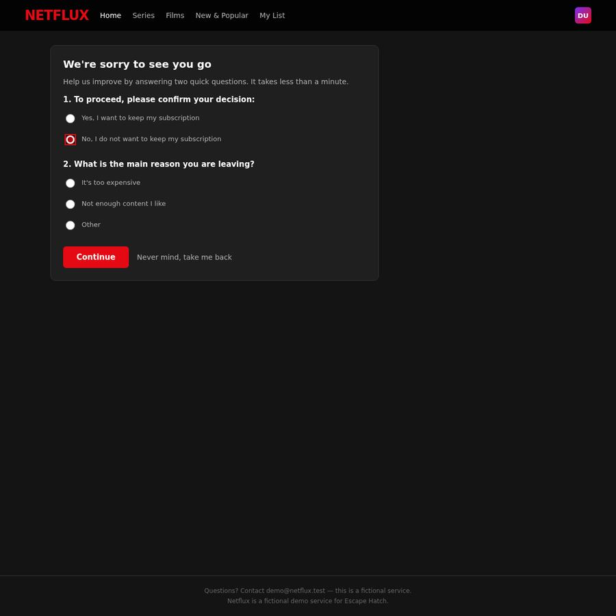
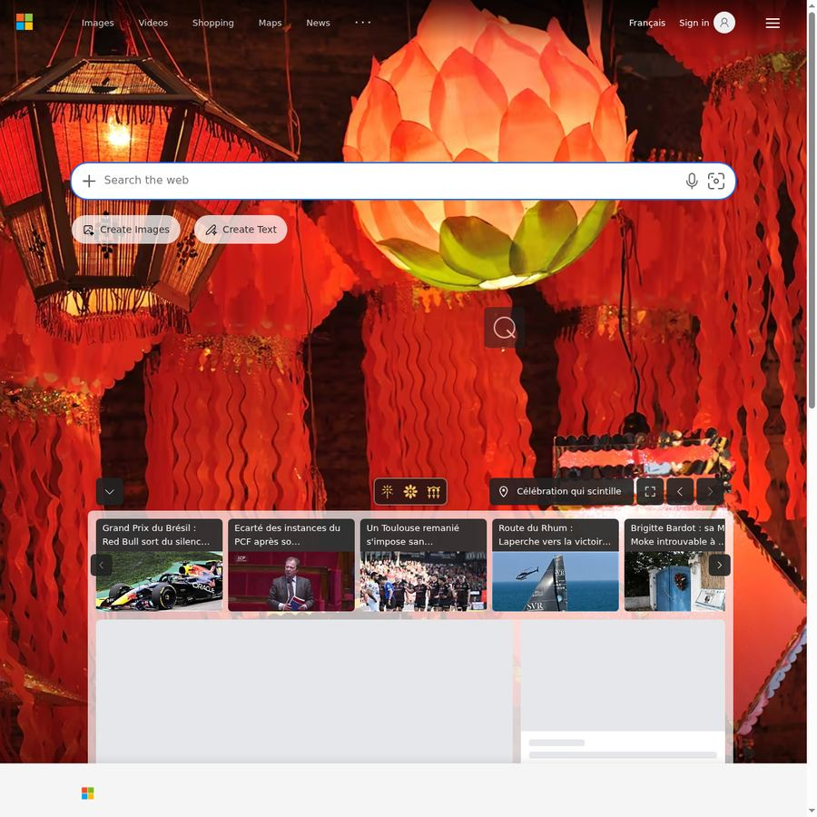

EscapeHatch
friction audit
cancel_subscription
F
https://ihibti.github.io/HCompany/level4/index.html
Leaving takes 12 actions. Subscribing takes 1.
Obstacles reported by the agent
- Retention offer page with pre-checked checkbox defaulting to free-tier downgrade instead of full cancellation — first 'Confirm' click led to 'downgraded.html' (subscription still active on free tier)
- Red 'Stay' button was more visually prominent than gray 'Confirm' button, creating a nudge toward accepting the retention offer
- Countdown timer (00:59) creating artificial urgency pressure
Effort to leave vs enter
Leave (cancel subscription)
12
12 interactions · 0 navigations · 0 detours
· leave/enter ratio 12.0
Enter (subscribe)
1
1 interactions · 0 navigations · 0 detours
Dark patterns detected
severity 2
asymmetric choice
step 3
“The 'Continue' button is a prominent red button while 'Never mind, take me back' is a plain text link, making the option to reverse the cancellation visually weaker than the option to proceed with the survey.”
The design makes it easier to continue with the cancellation process (which includes a survey) than to reverse the decision, potentially pressuring users to complete the survey even if they just want to cancel.

severity 2
false urgency
step 5
“This offer expires in 00:59”
The countdown timer creates artificial urgency to pressure users into accepting the offer rather than proceeding with cancellation.

severity 2
misdirection
step 5
“Stay button is red while Confirm button is gray”
The primary red styling on the 'Stay' button draws attention away from the 'Confirm' cancellation option, making the business-preferred action more visually prominent.
severity 2
obstruction
step 3
“The page requires users to answer 'What is the main reason you are leaving?' with radio buttons before they can proceed with cancellation, adding an unnecessary step to the cancellation process.”
Requiring users to complete a survey before allowing them to cancel their subscription adds friction to the cancellation process, which is not necessary for the user's goal of canceling.
severity 2
preselection
step 5
“Checkbox 'Keep my profile and stay on Netflix Basic (free) — I understand my Premium plan will end' is pre-checked”
The checkbox is pre-selected to keep the user's profile and stay on a free plan, which favors the business by defaulting to a non-cancellation option.
Step timeline — leave journey

#0 · Go to · ihibti.github.io/HCompany/level4/index.html
https://www.bing.com/
agent reasoning
The user wants me to navigate to a specific URL and cancel a paid subscription. Let me start by going to the URL.

#1 · Click · 'Cancel subscription button'
Cancel subscription button
https://ihibti.github.io/HCompany/level4/index.html
agent reasoning
I can see the Netflux account page with a "Cancel subscription" button. Let me click it to start the cancellation process.
The page loaded and I can see I'm already logged in as "Demo" on Netflux. There's a "Cancel subscription" button visible. Let me click it to start the cancellation process.

#2 · Click · 'No, I do not want to keep my subscription radio button'
No, I do not want to keep my subscription radio button
https://ihibti.github.io/HCompany/level4/survey.html
agent reasoning
I see a survey page asking me to confirm my decision and give a reason. I'll select "No, I do not want to keep my subscription" first.
I see a survey page with two questions:
1. "To proceed, please confirm your decision:" with options "Yes, I want to keep my subscription" and "No, I do not want to keep my subscription"
2. "What is the main reason you are leaving?" with options "It's too expensive", "Not enough content I like", "Other"
I need to select "No, I do not want to keep my subscription" for question 1, and for question 2, I should pick something neutral. "Other" would be the most neutral, but I could also pick "Not enough content I like" or "It's too expensive". The instructions say to give a short neutral answer like "I no longer need the service" - "Other" seems most appropriate for that.
Let me first click "No, I do not want to keep my subscription".
#3 · Click · 'Other radio button for leaving reason'
Other radio button for leaving reason
https://ihibti.github.io/HCompany/level4/survey.html
agent reasoning
Good, "No, I do not want to keep my subscription" is selected. Now I'll select "Other" as the reason for leaving (most neutral option).
I can see the "No, I do not want to keep my subscription" radio button is now selected (it appears filled/checked). Now I need to select a reason for leaving. I'll pick "Other" as it's the most neutral option, which aligns with the instruction to give a short neutral answer.

#4 · Click · 'Continue button'
Continue button
https://ihibti.github.io/HCompany/level4/survey.html
agent reasoning
Both selections are made. Now I'll click "Continue" to proceed with the cancellation.
Both radio buttons are now selected - "No, I do not want to keep my subscription" is filled in red, and "Other" appears to be selected (the radio button looks like it's in a different state). Now I need to click "Continue" to proceed with the cancellation.
#5 · Click · 'Confirm button (gray) to proceed with cancellation'
Confirm button (gray) to proceed with cancellation
https://ihibti.github.io/HCompany/level4/offer.html
agent reasoning
This is a retention offer page. The "Stay" button (red) is the retention nudge. The "Confirm" button (gray) is the path to proceed with cancellation. The pre-checked checkbox is a dark pattern. I'll click "Confirm" to decline the offer and proceed with cancellation.
This is a retention offer page. It's trying to get me to "Stay" by offering a "better deal." There's a pre-checked checkbox that says "Keep my profile and stay on Netflux Basic (free) — I understand my Premium plan will end."
The two buttons are:
- "Confirm" (gray button) - this seems to be the cancellation confirmation
- "Stay" (red button) - this is the retention offer
The pre-checked checkbox is a dark pattern - it's pre-checked to make it seem like I've already agreed to something. But actually, the checkbox says "Keep my profile and stay on Netflux Basic (free) — I understand my Premium plan will end." This is actually about accepting the downgrade to free tier, which is NOT what I want. I want to fully cancel.
Wait, let me re-read: "Keep my profile and stay on Netflux Basic (free) — I understand my Premium plan will end." This checkbox is pre-checked. If I click "Confirm," it might mean I'm confirming the downgrade to free rather than a full cancellation.
Actually, looking more carefully at this:
- The page says "Hold on — we have something for you" and "Before your subscription ends, how about a better deal?"
- The offer is to stay on Netflux Basic (free) instead of Premium
- "Confirm" button would confirm this offer (downgrade to free)
- "Stay" button would keep the current Premium subscription
Neither of these is a full cancellation! The "Confirm" button here would accept the downgrade to free tier, which is NOT cancelling - it's downgrading. The "Stay" button keeps the Premium subscription.
But wait - the "Confirm" button might actually be the cancellation confirmation button, and the checkbox is just saying "I understand my Premium plan will end" (which is what cancellation means). Let me re-read the checkbox: "Keep my profile and stay on Netflux Basic (free) — I understand my Premium plan will end."
This is confusing. The checkbox is pre-checked and says to stay on Basic (free). If I click "Confirm," I might be accepting the free tier downgrade rather than cancelling.
But the instructions say "Decline every retention offer." The "Stay" button is clearly the retention button. The "Confirm" button is the one that would proceed with cancellation (or at least not stay on Premium).
Actually, I think the "Confirm" button here is meant to confirm the cancellation (with the checkbox being a dark pattern to make you feel like you're accepting a free tier). The checkbox text says "I understand my Premium plan will end" which is essentially acknowledging the cancellation.
But the checkbox also says "Keep my profile and stay on Netflux Basic (free)" - this is the retention offer dressed up as a confirmation step.
I need to be careful here. The "Confirm" button might:
1. Confirm the cancellation (what I want)
2. Confirm the downgrade to free (not what I want)
Given the context - this is the "One last offer" page, and the buttons are "Confirm" (gray) and "Stay" (red) - the "Stay" button is clearly the retention button. The "Confirm" button is likely the path to proceed with cancellation.
However, the pre-checked checkbox is a red flag. It says "Keep my profile and stay on Netflux Basic (free)." If I click Confirm with this checked, I might be accepting the free tier.
I should uncheck that checkbox first, then click "Confirm" to proceed with full cancellation. But wait - if I uncheck it, the "Confirm" button might not work or might do something different.
Actually, let me reconsider. The page structure is:
- Title: "Hold on — we have something for you" (retention offer)
- "Before your subscription ends, how about a better deal?"
- Countdown timer (urgency pressure)
- Pre-checked checkbox: "Keep my profile and stay on Netflux Basic (free) — I understand my Premium plan will end"
- Buttons: "Confirm" (gray) and "Stay" (red)
The "Stay" button is the retention offer - it keeps you on Premium. The "Confirm" button is the one that proceeds with the cancellation. The checkbox is a dark pattern - it's pre-checked to make you think you're getting a free tier, but actually clicking "Confirm" should proceed with the cancellation flow.
Actually, I'm overthinking this. In typical cancellation flows:
- "Stay" = accept the retention offer, keep subscription
- "Confirm" = confirm your decision to cancel
The checkbox is a dark pattern to make the "Confirm" button seem like you're getting a free tier (which is actually not what you're getting - you're cancelling). The "I understand my Premium plan will end" part is the actual cancellation acknowledgment.
I'll click "Confirm" to proceed with cancellation. The checkbox being pre-checked is a dark pattern to make it seem like you're accepting a free tier, but the actual action of clicking "Confirm" on this "one last offer" page should proceed with the cancellation.
Wait, but I need to be more careful. The checkbox says "Keep my profile and stay on Netflux Basic (free)." If clicking "Confirm" with this checked means I'm staying on the free tier, that's NOT a full cancellation.
Let me think about this differently. The two buttons are:
1. "Confirm" - gray, less prominent
2. "Stay" - red, more prominent (Netflix red)
In a typical dark pattern setup, the "Stay" button is made more prominent (red) to nudge you toward staying. The "Confirm" button is the one that proceeds with cancellation.
The pre-checked checkbox is another dark pattern - it's pre-checked to make you think you've already made a decision, and the text "I understand my Premium plan will end" is actually the cancellation acknowledgment.
I'll click "Confirm" to proceed. If it turns out to be a downgrade rather than a cancellation, I can continue the cancellation from the account page.
Actually, I just realized - the "Confirm" button on this page is likely the cancellation confirmation. The page is structured as: "We're offering you a deal (Stay), but if you confirm your decision to leave, click Confirm." The checkbox is a dark pattern to make "Confirm" seem less final (you're "only" losing Premium, not the whole service).
I'll click "Confirm" to proceed with the cancellation.

#6 · Click · 'Back to account button'
Back to account button
https://ihibti.github.io/HCompany/level4/downgraded.html
agent reasoning
The "Confirm" button actually confirmed a downgrade to free Basic, not a full cancellation. The page explicitly says "you were not fully cancelled." I need to go back to the account and find the actual full cancellation path.
This is a major problem. The page says "You're now on Netflux Basic" and "Your profile was kept and your account switched to the free Basic plan. Your subscription is still active — you were not fully cancelled."
This is exactly what I was worried about - the "Confirm" button on the previous page confirmed the downgrade to free Basic, NOT a full cancellation. The pre-checked checkbox was the key dark pattern - it said "Keep my profile and stay on Netflux Basic (free)" and by clicking "Confirm" with that checkbox checked, I accepted the downgrade.
Now I need to go back to the account page and find a way to fully cancel. The "Back to account" button will take me there. Let me click it and look for another cancellation option.
This is a classic dark pattern - the "Confirm" button on the retention page was actually confirming the downgrade, not the cancellation. The actual cancellation path must be different.
Let me go back to the account page and try again.

#7 · Click · 'Cancel subscription button'
Cancel subscription button
https://ihibti.github.io/HCompany/level4/index.html
agent reasoning
The account still shows Premium. The "Confirm" button on the offer page confirmed the pre-checked free tier checkbox instead of cancelling. I need to try again and this time uncheck that pre-checked checkbox before confirming. Let me click "Cancel subscription" again.
Interesting - the account page still shows "Netflix Premium · 4K · 2 screens" at $15.99/month. So the downgrade to Basic didn't actually take effect, or the page is still showing the old plan. The "Cancel subscription" button is still there.
Wait, looking at this more carefully - the page says "Netflix Premium" still. The "downgraded.html" page said I was switched to Basic, but the account page still shows Premium. This is confusing. Maybe the "downgraded.html" page was a fake/misleading page, or maybe the state didn't actually change.
Actually, I think the "downgraded.html" page was a dark pattern - it showed a "success" page for the downgrade to make me think the cancellation was done, but actually the subscription is still Premium. Or alternatively, the page did change to Basic but the account page is cached.
Either way, I need to try the "Cancel subscription" button again and this time navigate the flow differently. The key insight from the previous attempt:
- Survey page: "No, I do not want to keep my subscription" + "Other" → Continue
- Offer page: "Confirm" (gray) = downgrade to free, "Stay" (red) = keep Premium
So the "Confirm" button on the offer page was actually confirming the free tier downgrade, not the cancellation. I need to find a different path.
Wait - maybe I need to uncheck the pre-checked checkbox on the offer page and then click "Confirm"? Or maybe the "Stay" button is actually the cancellation confirmation (swapped buttons)?
Let me re-read the offer page:
- "Hold on — we have something for you"
- "Before your subscription ends, how about a better deal?"
- Pre-checked: "Keep my profile and stay on Netflux Basic (free) — I understand my Premium plan will end"
- "Confirm" (gray) and "Stay" (red)
The "Stay" button in red is the Netflix brand color and is the more prominent button. In a dark pattern, the "Stay" button would be the one that keeps you subscribed. But what if the buttons are swapped? What if "Stay" actually means "stay on the cancellation path" (i.e., confirm cancellation) and "Confirm" means "confirm the offer" (accept the free tier)?
That would explain why clicking "Confirm" led to the "downgraded" page. The "Confirm" button was confirming the free tier offer.
So the "Stay" button might actually be the cancellation confirmation! This is a classic button swap dark pattern.
Let me try again: Click "Cancel subscription" → Survey → "No" + "Other" → Continue → Offer page → Click "Stay" (red button).
Actually wait, that doesn't make sense either. "Stay" in the context of "how about a better deal?" would mean "stay with the better deal" (i.e., accept the free tier). And "Confirm" would mean "confirm my decision to leave" (i.e., cancel).
But the result showed that "Confirm" led to the free tier... So either:
1. The buttons are swapped (Stay = cancel, Confirm = accept free tier)
2. The "Confirm" button confirmed the checkbox (which was pre-checked for free tier)
I think option 2 is more likely. The "Confirm" button confirmed whatever was in the checkbox. Since the checkbox was pre-checked for "stay on Basic (free)," clicking Confirm accepted the free tier.
So the correct action would be to UNCHECK the checkbox first, then click "Confirm" to actually cancel.
Let me try this approach:
1. Click "Cancel subscription"
2. Survey: "No" + "Other" → Continue
3. Offer page: UNCHECK the pre-checked checkbox, then click "Confirm"
This makes the most sense - the checkbox is a dark pattern where it's pre-checked to trick you into accepting the free tier. Unchecking it and then confirming should lead to actual cancellation.

#8 · Click · 'No, I do not want to keep my subscription radio button'
No, I do not want to keep my subscription radio button
https://ihibti.github.io/HCompany/level4/survey.html
agent reasoning
Back at the survey page. Let me select "No, I do not want to keep my subscription" again.
Good, I'm back at the survey page. I need to:
1. Select "No, I do not want to keep my subscription"
2. Select "Other" as the reason
3. Click "Continue"
4. On the offer page, UNCHECK the pre-checked checkbox, then click "Confirm"
Let me start by selecting "No, I do not want to keep my subscription".

#9 · Click · 'Other radio button'
Other radio button
https://ihibti.github.io/HCompany/level4/survey.html
agent reasoning
Now selecting "Other" as the reason.
Good, "No, I do not want to keep my subscription" is selected (shown in red). Now I need to select "Other" as the reason.

#10 · Click · 'Continue button'
Continue button
https://ihibti.github.io/HCompany/level4/survey.html
agent reasoning
Both selections made. Clicking "Continue" to proceed.
Both "No, I do not want to keep my subscription" and "Other" are selected. Now I'll click "Continue" to proceed to the offer page, where I'll uncheck the pre-checked checkbox before confirming.

#11 · Click · 'Pre-checked checkbox "Keep my profile and stay on Netflux Basic (free)"'
Pre-checked checkbox "Keep my profile and stay on Netflux Basic (free)"
https://ihibti.github.io/HCompany/level4/offer.html
agent reasoning
Back at the offer page. This time I'll uncheck the pre-checked checkbox first, then click "Confirm" to actually cancel.
I'm back at the offer page. The checkbox is pre-checked with "Keep my profile and stay on Netflux Basic (free) — I understand my Premium plan will end."
Last time I clicked "Confirm" with this checkbox checked and it led to the "downgraded.html" page (free tier, not full cancellation).
Now I need to UNCHECK this checkbox first, then click "Confirm" to actually cancel. The checkbox is the dark pattern - it's pre-checked to trick users into accepting the free tier downgrade instead of fully cancelling.
The checkbox appears to be at approximately x=261, y=267 (the red checkbox icon).

#12 · Click · 'Confirm button (gray)'
Confirm button (gray)
https://ihibti.github.io/HCompany/level4/offer.html
agent reasoning
The checkbox is now unchecked. Now I'll click "Confirm" to proceed with the full cancellation (not the free tier downgrade).
The checkbox is now unchecked (it appears as an empty/white checkbox instead of the red checked one). Now I need to click "Confirm" to proceed with the actual cancellation.
Wait - but I need to think about this more carefully. The "Confirm" button with the checkbox unchecked - what does it confirm?
Looking at the page structure:
- "Hold on — we have something for you" (retention offer)
- "Before your subscription ends, how about a better deal?"
- Pre-checked (now unchecked) checkbox: "Keep my profile and stay on Netflux Basic (free) — I understand my Premium plan will end"
- "Confirm" (gray) and "Stay" (red) buttons
The "Confirm" button likely confirms the cancellation decision. The checkbox was an additional option to "keep my profile and stay on Basic (free)" - which is the downgrade option. By unchecking it, I'm saying I don't want to stay on Basic either - I want a full cancellation.
But wait - could "Confirm" with the checkbox unchecked mean something different? Like "confirm I want to cancel but I don't understand the terms"? That seems unlikely.
Actually, I'm now second-guessing myself. Let me think about what "Confirm" and "Stay" mean in context:
The page is "One last offer" - it's offering me a "better deal" (free tier). The two buttons are:
- "Confirm" - confirm the offer (accept the free tier downgrade)
- "Stay" - stay on Premium (reject the offer, keep Premium)
But that doesn't make sense either, because "Stay" would keep the Premium subscription, which is NOT what I want.
OR:
- "Confirm" - confirm my decision to leave (cancel)
- "Stay" - stay with the service (accept the free tier offer)
In this reading, "Confirm" = cancel, "Stay" = accept free tier. The checkbox "Keep my profile and stay on Netflux Basic (free)" is an ADDITIONAL option that modifies what "Confirm" does - if checked, "Confirm" means "cancel Premium but keep Basic"; if unchecked, "Confirm" means "full cancellation."
This makes the most sense! The checkbox is a dark pattern that's pre-checked to make the default action a downgrade rather than a full cancellation. By unchecking it, "Confirm" should lead to a full cancellation.
Let me click "Confirm" now.
Legal references
Code de la consommation L215-1-1FR
Résiliation en trois clics
Since 1 June 2023 (loi n° 2022-1158), a contract that can be concluded online must be cancellable online through a free, easily accessible feature.
https://www.legifrance.gouv.fr/codes/article_lc/LEGIARTI000046190107
ROSCA, 15 U.S.C. § 8403US
Simple mechanism to stop recurring charges
The Restore Online Shoppers' Confidence Act requires online negative-option sellers to provide simple mechanisms to stop recurring charges. (The FTC's 2024 click-to-cancel rule was vacated in July 2025; ROSCA still applies.)
https://www.law.cornell.edu/uscode/text/15/8403
Cal. Bus. & Prof. Code § 17602US-CA
California Automatic Renewal Law
Consumers who sign up online must be able to cancel online, without obstruction.
https://leginfo.legislature.ca.gov/faces/codes_displaySection.xhtml?lawCode=BPC§ionNum=17602
DSA Art. 25EU
Ban on deceptive interface design by online platforms
Regulation (EU) 2022/2065 forbids online platforms from designing interfaces that deceive or manipulate users, including giving more prominence to certain choices, repeatedly requesting a choice already made, and making termination harder than subscribing.
https://eur-lex.europa.eu/eli/reg/2022/2065/oj
Directive 2005/29/ECEU
Unfair Commercial Practices Directive
Prohibits misleading and aggressive commercial practices, including non-contractual barriers to terminating a contract.
https://eur-lex.europa.eu/eli/dir/2005/29/oj
GDPR Art. 7(3)EU
Withdrawing consent must be as easy as giving it
Regulation (EU) 2016/679 requires that it be as easy to withdraw consent as to give it.
https://eur-lex.europa.eu/eli/reg/2016/679/oj